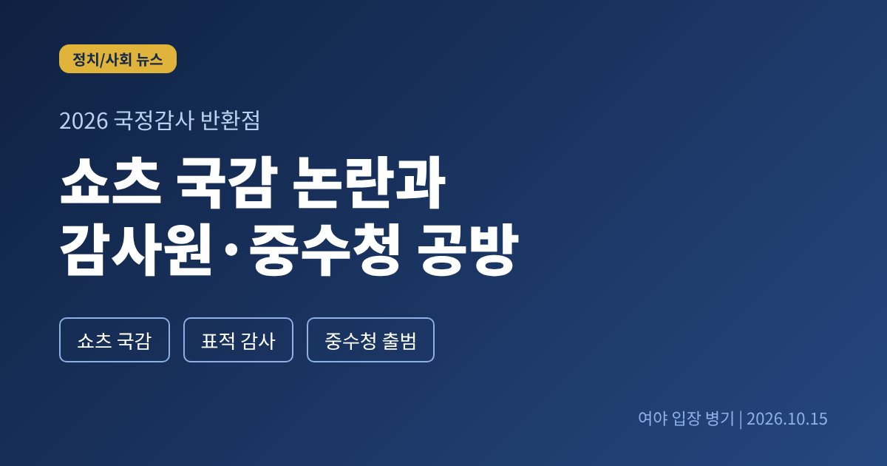
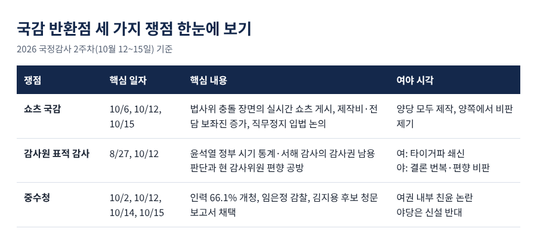
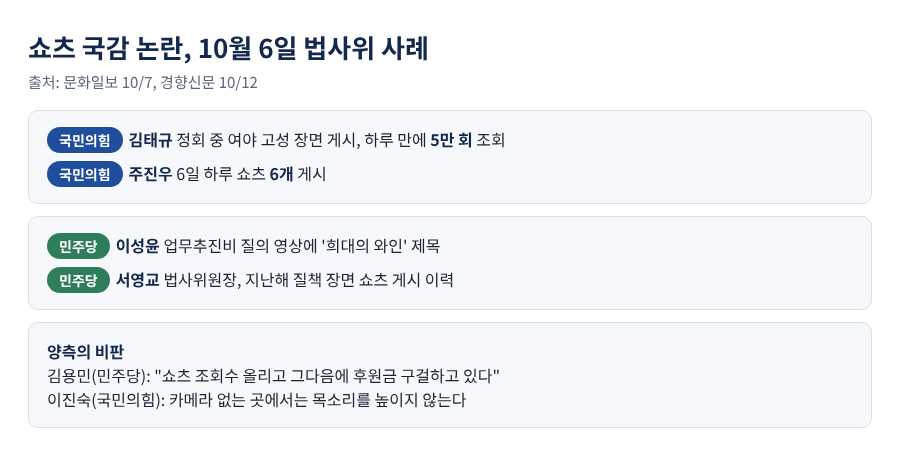
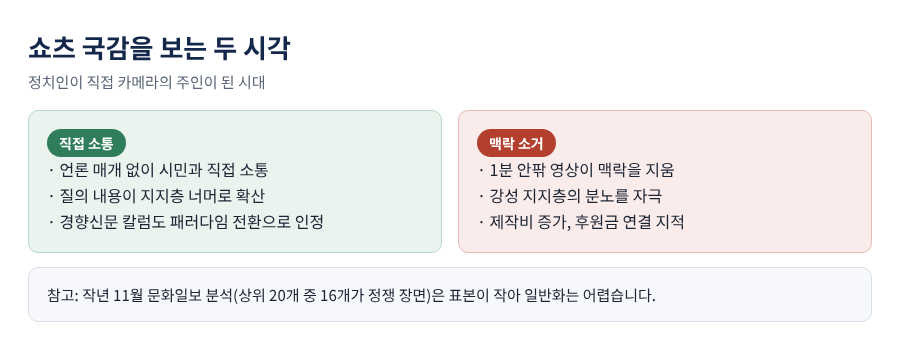
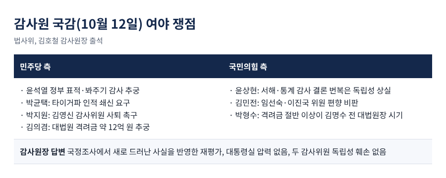
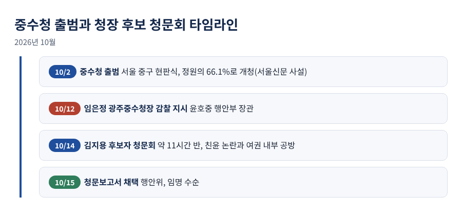

이번 글에서는 2026 국정감사가 반환점을 돈 시점의 세 가지 쟁점을 정리합니다. 정책 검증인가 영상 클립 정치인가를 두고 벌어진 '쇼츠 국감' 논란, 10월 12일 감사원 국감의 '표적 감사' 공방, 그리고 출범 2주를 넘긴 중대범죄수사청(중수청)의 청장 후보 청문회입니다. 여야 양측의 주장을 나란히 놓고 보겠습니다.
국정감사는 10월 6일 시작해 12일부터 2주차에 들어갔습니다. 이날 국회는 법사위, 정무위, 재경위 등 12개 상임위를 일제히 가동했습니다(경향신문 10월 12일).
파이낸셜뉴스는 15일 반환점 평가에서 DMZ 지뢰 폭발, 단일종목 레버리지 ETF, 조희대 대법원장의 재제청 거부 등을 주요 이슈로 꼽았습니다. 동시에 "정쟁이 다시 국감을 지배했다"는 비판도 소개했습니다. 일부 상임위의 정책 검증은 호평을 받았다는 점도 함께 전했습니다.
이 글은 그중 세 갈래를 다룹니다.

첫 번째는 쇼츠 논란입니다. 문화일보에 따르면 첫날인 6일 법사위에서 여야 의원들은 충돌 장면을 쇼츠로 만들어 거의 실시간으로 유튜브에 올렸습니다.
국민의힘 김태규 의원은 정회 중 여야 고성 장면을 올렸고, 이 영상은 하루 만에 5만 회 조회를 기록했습니다. 서영교 법사위원장은 김 의원에게 "유튜브를 찍으려는 것이냐"고 물었습니다. 다만 서 위원장도 지난해 법사위에서 피감기관 관계자를 질책하는 장면을 쇼츠로 올린 적이 있습니다.
쇼츠를 만든 쪽은 한 정당이 아닙니다. 국민의힘 주진우 의원은 6일 하루에만 쇼츠 여섯 개를 올렸습니다. 민주당 이성윤 의원은 대법원장에게 업무추진비를 묻는 영상에 '업추비로 구매한 희대의 와인'이라는 제목을 달았습니다. 진보당 손솔 의원의 질의 장면도 영상으로 퍼졌습니다.
경향신문 기자칼럼(12일)은 같은 장면을 두 의원이 각자 편집해 올린 사례를 짚었습니다. 한쪽은 '참다못한 서영교의 강력한 경고', 다른 쪽은 '아몰랑 난 못 들었어'였습니다. 칼럼은 의원들의 정치자금 지출에서 쇼츠 제작비가 늘고 있고, 전담 보좌진을 둔 의원도 있다고 전했습니다. 한 민주당 법사위원은 보좌진이 삼각대까지 세운다며 한숨을 지었다고 합니다.
비판은 양쪽에서 나왔습니다. 민주당 김용민 의원은 "쇼츠 조회수 올리고 그다음에 후원금 구걸하고 있다"고 말했습니다. 국민의힘 이진숙 의원은 과방위에서 무소속 최혁진 의원을 향해 카메라가 없는 곳에서는 목소리를 높이지 않는다고 맞받았습니다.
15일에는 민주당 신현영 대변인이 주진우, 이진숙, 김태규 의원을 거명하며 제명 등 제도적 조치 검토를 언급했습니다. 제명은 재적의원 3분의 2가 필요해 어렵고, 직무정지 같은 방안을 논의 중이라는 설명이었습니다. 이 인터뷰에는 국민의힘 측 반론이 실리지 않았습니다. 주 의원은 앞서 유튜브 구독자 50만 명 등을 밝히며 더 강하게 싸우겠다는 취지의 메시지를 낸 것으로 칼럼은 전했습니다.

예전엔 언론이 정치인을 관찰하고 풍자했습니다. 지금은 정치인이 카메라의 주인입니다. 경향신문 칼럼이 YTN 〈돌발영상〉을 예로 들어 짚은 대비입니다.
의원이 시민과 직접 소통하는 것 자체는 패러다임 전환이라는 평가가 있습니다. 반면 1분 안팎의 영상은 맥락을 지우고, 강성 지지층을 자극하는 장면만 남긴다는 우려도 큽니다. 칼럼은 이를 진화가 아닌 퇴보로 평가했습니다.
참고할 자료가 하나 있습니다. 문화일보가 지난해 11월 유튜브 조회수 상위 국감 쇼츠 20개를 분석했더니 16개(80%)가 정쟁 장면이었습니다. 다만 표본이 20개에 불과하고 정쟁의 분류 기준도 분명하지 않아, 전체 국감 쇼츠로 일반화하기는 어렵습니다. 올해 수치가 아닌 점도 유의해야 합니다.
국감은 정부를 견제하는 헌법 기관의 권한 행사입니다. 전문가들도 논리로 검증하는 편이 야당에 오히려 유리하다고 조언합니다(세계일보 9일).

두 번째는 12일 법사위의 감사원 국감입니다. 쟁점의 뿌리는 8월 27일 감사원 발표입니다. 감사원은 TF 조사 결과 윤석열 정부 시기 통계·서해 감사에서 강압감사와 증거조작, 사생활 침해 등 감사권 남용이 있었다고 밝혔습니다. 최재해 전 감사원장과 유병호 감사위원 등 10명의 자료를 국가수사본부에 넘겼고, 통계감사 실무자 9명은 고발했습니다(아시아경제 8월 27일). 통계감사에 참여했던 일부 직원은 TF 조사가 "정해진 결론"에 따랐다고 반박했습니다.
국감에서 민주당은 윤석열 정부의 표적 감사와 봐주기 감사를 추궁했습니다. 박균택 의원은 유병호 전 사무총장 측근으로 불리는 '타이거파'의 인적 쇄신을 요구했습니다. 박지원 의원은 김영신 감사위원을 지목해 사퇴를 촉구했고, 김 위원은 연관을 부인하며 임기는 헌법으로 보장된다고 답했습니다.
국민의힘은 방향을 달리했습니다. 윤상현 의원은 서해 공무원 피격과 부동산 통계 감사의 결론이 정부에 따라 바뀐 점을 물으며 독립성 상실을 지적했습니다. 김민전 의원은 이재명 정부가 임명한 임선숙, 이진국 감사위원의 정치 편향을 비판했고, '당나라 감사원'이라는 표현까지 나왔습니다.
김호철 감사원장은 국정조사에서 새로 드러난 사실이 재평가에 반영됐고, 대통령실의 압력은 없었다고 답했습니다. 두 감사위원의 독립성도 훼손되지 않았다고 했습니다(이투데이·미디어펜 12일).
대법원 격려금 문제도 다시 불거졌습니다. 감사원은 약 4년간 대법관 등에게 지급된 현금 격려금 약 12억 원을 확인하고 주의 조치에 그쳤습니다. 민주당 김의겸 의원은 대법원장이 몰랐다고 할 수 있느냐고 물었습니다. 국민의힘 박형수 의원은 2022~2025년 지급분 가운데 절반 이상이 김명수 전 대법원장 시기라며 현 대법원장만 겨냥하는 것을 지적했습니다.

세 번째는 중수청입니다. 10월 2일 출범한 중수청은 부패, 경제, 방위산업, 마약, 내란, 외환, 사이버 범죄 등을 맡습니다. 서울신문 사설(13일)은 출범 열흘이 넘도록 첫 수사에 착수하지 못했다고 비판했습니다. 정원의 66.1%로 문을 열었고, 본청 과장급 24자리 중 16자리가 비었으며, 자체 전산망이 없어 출입국 기록을 서면으로 받는다는 내용입니다. 사설이라는 점에서 평가가 담긴 서술입니다.
이어 윤호중 행정안전부 장관이 12일 임은정 광주중수청장에 대한 감찰을 지시했습니다. 임 청장이 김지용 청장 후보자를 공개 비판해 온 일이 배경입니다. 윤 장관은 "직위를 이용한 정치 행동인지 살피라는 취지"라고 설명했습니다. 조국혁신당은 감찰이 후보자 문제 제기를 위축시켜서는 안 된다고 했고, 야당은 임용한 장관의 인사 실패라고 비판했습니다.
14일 약 11시간 반 진행된 김지용 후보자 청문회는 야당 공세보다 여권 내부 논쟁이 두드러졌습니다. 후보자가 검찰 출신이고 2020년 윤석열 당시 총장 징계 재고를 요청하는 성명에 서명했다는 점을 두고, 강경파는 '친윤' 논란을 제기했습니다. 반면 대통령 측은 윤석열 정부 들어 한직으로 밀린 '반윤' 인사라고 옹호했습니다. 후보자는 친윤 검사라는 규정을 부인했고, 중수청이 검찰로 돌아가지 않을 것이라고 답했습니다.
안태근 전 검사 사건 감찰 미조치 의혹도 나왔습니다. 후보자는 구체적 진정 없이 공식 조사가 어려웠다고 답했고, 피해자 측은 반박했습니다. 국민의힘은 중수청 신설에 반대하는 입장이어서 후보자를 강하게 몰아붙이기 어려웠고, 청문회는 상대적으로 조용했다는 분석이 나왔습니다(노컷뉴스 14일). 국회 행안위는 15일 청문보고서를 채택해 임명 수순에 들어갔습니다(파이낸셜뉴스).

남은 국감에서도 증인 공방은 이어질 전망입니다. 야당은 이재용, 최태원 회장의 증인 채택을 요구하고 있고, 여당은 기업인 증인을 최소화하겠다며 거부하고 있습니다. 이 다툼은 국감 후반 운영위 일정까지 이어질 것으로 보입니다(파이낸셜뉴스).
쇼츠 문제는 직무정지 입법 논의로 옮겨 갈 수 있습니다. 다만 제명은 문턱이 높고, 쇼츠를 만드는 쪽이 여야 모두라는 점에서 합의가 쉽지는 않을 듯합니다. 감사원은 재심의와 인적 쇄신을, 중수청은 인력과 전산 정비를 먼저 마쳐야 합니다. 본격적인 중수청 수사가 시작되면 새로운 공방이 뒤따를 수도 있습니다.
정리하면 이렇습니다. 국감 반환점에 남은 질문은 하나입니다. 이 자리가 정부를 검증하는 시간인지, 영상을 남기는 시간인지입니다.
"좋은 질의는 편집 없이도 설득력이 있어야 합니다." 쇼츠가 늘어난 시기에 오히려 긴 질의를 끝까지 들어 볼 이유가 여기에 있다고 생각합니다.
남은 일정에서 어떤 질의가 기억에 남을지, 지켜보시길 권합니다.
출처: 경향신문, 문화일보, 세계일보, 파이낸셜뉴스, 뉴스핌, 이투데이, 미디어펜, 뉴스1, 아시아경제, 서울신문, 노컷뉴스 (상세 URL은 research.md 참조)